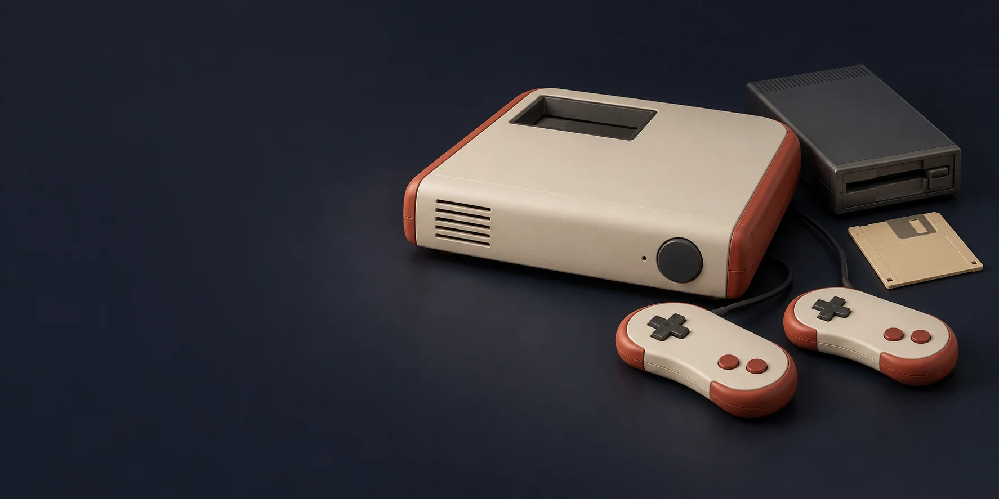

YOUR CARTRIDGE
読み込んだデータ
- 状態
- 未読込
1983 — PLAY IT AGAIN
カセットを選んで、電源を入れる。
ここは、あなたの8ビットルーム。

VOXEL WORKSHOP
背景タイルとキャラクターを個別に立体化。ゲーム画面をドラッグして視点を変えられます。現在はiNES形式のNROM（mapper 0・CHR ROM 8 KB）に対応。
マリオ・スパルタンXの初期設定を用意しています。ゲーム固有の土管・建物・人物の形状は、原画のタイルを選んで調整してください。両タイトルの実ROMによる調整・検証は未完了です。
設定はROMごとにこのブラウザーへ保存します。
起動後、ゲーム画面右下の2D原画をクリック。選んだタイルの厚み・位置を変更できます。同じタイルの全出現箇所に適用します。
タイル未選択
厚み0で非表示。背景とスプライトは別設定。3dSenのプロファイル形式とは互換性がありません。矢印キー：移動 · Z：B · X：A · Enter：START · Shift：SELECT
タッチ操作・ゲームパッド対応。設定・セーブ／ロードはゲーム画面内から。3Dモードの音声は画面内の「音声ON」で開始。
YOUR CARTRIDGE
DISK & SAVE
FDSはディスクデータに加え、手元の8 KB BIOSを選択して起動します。ディスク面は右側の選択欄から切り替えられます。
セーブデータ・ステートの保存と読込は画面内メニューから。大切なデータはファイルに書き出してください。
COMPATIBILITY
iNES・NES 2.0・UNIF・FDSを読み込み、FCEUmm / Nestopiaで実行します。動かない場合は別コアを選んで再起動してください。
特殊な基板・周辺機器・不正なROMデータなど、全タイトルの完全動作は保証していません。